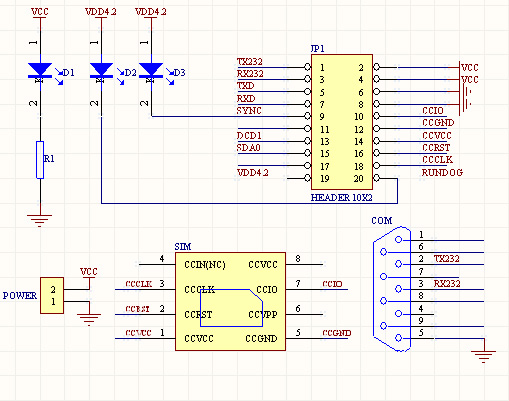
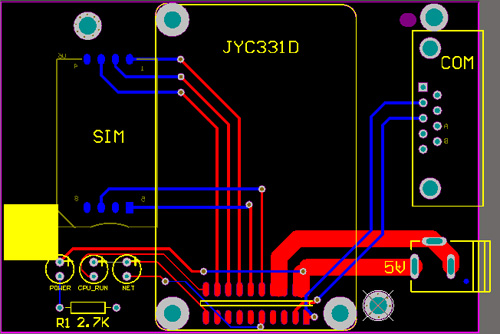

JYC331D3 GPRS 双通道DTU
JYC331D3 DTU 采用小型化设计，外形尺寸和西门子模块一样大小，内嵌PPP、IP、UDP、TCP、DNS、GSM 07.10 Multiplexer通信协议，短信PDU协议。采用2.0mm排母接插件，3mm固定螺丝孔、5~12V供电电源，RS232串口/TTL电平，内置SIM卡座，用户几乎不需要进行任何开发，只需要通过20PIN的排针供电就能完成GPRS联网。特别适合远程抄表，电力监控等行业的应用。
产品简介：
JYC331D3 基于GPRS网络研制的。在温度范围、抗干扰等方面均采用特殊设计，保证了恶劣环境下的工作稳定性，为您的设备提供了高质量保证。RS232/485/TTL232接口 用户数据全透明传输，仪表端的设备不必作任何改动。 广泛用于远程抄表，监控，监测项目中。
集成方便：
1、硬件方面，提供集成技术图纸、demo板子，器件清单，原理图和pcb图。
2、软件方面，提供宏电通信协议，桑荣通信协议、驿唐通信协议等，并提供windows版本的DTU模拟软件。
3、技术服务，指导用户集成开发，直到用户能顺畅使用。
 十大优势：
选静远嵌入GPRS DTU 模块的10大理由：
1、供电优势：模块使用4.2到12V供电，供电范围宽，跟5V系统和12V系统能无缝对接，不需专门使用稳压电源设计，即插即用。用户不需要设计电路板，焊接器件便可使用。嵌入式GPRS DTU模块跟普通DTU的差别，仅仅是没有外壳，其它功能一应俱全。
2、串口通信：使用RS232方式通信，能跟普通的pc机直接通信，开发工程师不需要动烙铁，不需要懂硬件也可开发。同时可使用TTL通 信，无需动烙铁就可对接TTL设备。
3、自带SIM卡。在使用国外的gprs模块的时候，都要专门设计sim卡电路。而此模块带sim卡，开发工程师或项目集成人员，不需设计电路即可使用。同时考虑开发产品可能要求sim卡外置的需要，也留有sim卡外置接口。
4、装配优势：使用2.0间距的排阵和排线，不需要专门设备就能可靠焊接。提高产品成品率和可靠性。
5、标配宏电dtu通信模式协议，相当于宏电dtu 1/2的价格，就能实现宏电dtu的功能，降低产品的综合成本，提高产品竞争力。
6、标配静远电子模式通信协议。没有固定IP的用户不用愁，静远电子为客户提供转发服务，且费用低廉。
7、开发编程接口，提供sdk。会C语言的就能开发，且提供众多的示例程序供参考，开发便捷、高效省时省力。
8、提供VC环境下的模拟器，能在pc上完成95%的功能，极大提高开发效率，提高产品投放市场的速度。
9、解决大客户对产品供货方面的供货周期、供货量方面的担忧。
10、技术开放优势：详细讲解硬件看门狗，二次看门狗的实现原理，让用户明白我公司的dtu是现无人职守.
本配置工具对宏电的命令行方式的配置方法进行了图形化，配置更加简单明了。
1、移动服务中心配置：
1.1服务代码：
目前中国移动统一的接入号码SERVICE CODE均为"*99***1#",用户在用GPRS终端进行数据通讯时，无须向当地GPRS服务商申请；中国移动的SERVICE CODE是公用的接入号码，无须支付费用，实际运行时只需支付终端DTU实际流量的费用。
1.2PPP用户名和密码：
如果接入公网，PPP协议的用户名和密码都是空
1.3接入互联网的接入点（APN）：
接入点名称(APN)是中国移动为用户提供了不同的接入网络的类型，CMNET是中国移动提供的公用的接入点名称，如果您没有申请私有的之前请勿修改出厂缺省值CMNET
注意：以上诸项参数设置与运营商的网络有关，切莫随意设置，详细配置情况请向当地运营商查询。
2、终端单元配置：
2.1在线报告时间间隔：
在线报告时间间隔，此为链路维护参数，即心跳注册包发送的时间间隔，DTU周期性发送固定格式的心跳包到DSC，DSC收到心跳包后，会给DTU确认信息，从而达到维护DTU与DSC的链路连接，维持链路一直生存，保证DTU永远在线的功能。这是由于网络运营商为了防止一些终端挂在网上，而不传输数据，占用无线网络资源，当发现终端一定时间内没有传输数据时，就会把终端踢下线。如果设置为0，表示在线报告时间间隔无限大，即DTU不发送心跳注册包；如果设置为非0值，表示DTU在此设定值的时间间隔定时发送心跳注册包，如果需要DTU永远在线，DTU与DSC之间有不间断的数据传输，建议使用默认在线报告时间间隔40s，此值是经过很多丰富的测试经验得出。
2.2车载终端身份识别码
给DTU终端取一个名称，方便让用户在中心端容易识别DTU终端，建议使用SIM卡对应的手机号，并做下记录。
2.3最后包空闲时间间隔Last Packet Idle Interval
最后包空闲时间间隔是指当DTU向DSC发送一个数据包小于最大传输包长时，将等待预设的时间后再发送此数据包，如发送的数据包等于最大传输包长时将不等待，默认为600ms。
2.4本地通讯端口DTU Communication Port
本地通讯端口是指DTU收发数据的本地通讯端口号，DTU出厂默认端口号为：5001。
建议不修改此端口号。
3、串口设置
串口设置最低300bps，最高230400.支持7数据位的使用方式。
4、硬件版本信息
这些信息是供参考的，只能读取到，不需设置。
5、其它
DTU登录到GPRS网络后会获得GPRS网络分配给DTU的IP地址和DNS服务器的IP地址。信号强度在大于10能顺畅收发数据。在小于10的时候，检查天线安装的位置，合理按照，增加信号强度。
适用行业：
电、水、气三表抄送
遥控遥测、远程监控
消防、安防报警
气象、环境、交通监测
基本功能及特点：
超小设计，极大方便集成，尺寸 36×54×11，跟mc39i同样大小；
GSM网络覆盖的地方均可传输；
系统中心的设置灵活多变，不受地理限制；
可以内嵌仪表通信协议，仪表设备无需任何改动；
尺寸紧凑，便于仪表集成；
具有数据存储功能，10亿次读写次数，保证数据完整无缺；
用户可以采用灵活的数传方式来降低运行费用；
GPRS通信模式,短信模式同时支持；
TTL232\RS232\RS485三种仪表接口方式可选；
配套数据监控软件；
技术指标
| 工作环境 | 电源 |
| 模块工作温度 ：-35°C～+55°C | 标准电源：DC 12V 电压范围（6～36V） |
| 湿度范围 ：0－95%，非冷凝 | 工作电流：待机平均22mA，发射数据220mA@+12V DC |
| 天线接口：50Ω/SMA 阴头 | 用户数据接口：RS232/RS485 |
| 波特率：300～115200 BPS | |
| 吸盘式天线 | |
| 天线接口：50Ω/SMA 阳头 | 馈线长度：1.5、3米可选> |
电话:0311－85101385 传真：0311－85661213
地址: 石家庄市建设南大街槐安路交口西南角国富大厦11层